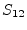
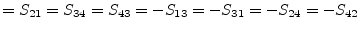
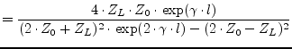

A differential (4-port) transmission line is not referenced to ground
potential, i.e. the wave from the input (port 1 and 4) is distributed
to the output (port 2 and 3). Its admittance parameters are:
The scattering parameters writes:
|  |
 |
(9.214) |
| |
 |
(9.215) |
Note: As already stated, this is a pure differential transmission line
without ground reference. It is not a three-wire system. I.e.
there is only one mode. The next section describes a differential line
with ground reference.
This document was generated by Stefan Jahn on 2007-12-30 using latex2html.